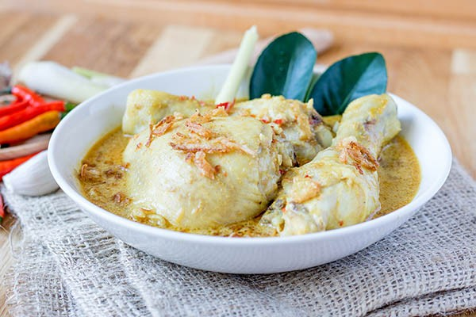

Opor Ayam
Opor Ayam: Creamy Indonesian Chicken Stew with Coconut Milk and Spices
Opor Ayam is a classic Indonesian dish known for its rich, creamy flavors and aromatic spices. This chicken stew is slow-cooked in a fragrant coconut milk broth infused with lemongrass, galangal, kaffir lime leaves, and a blend of traditional spices like turmeric and coriander. Originating from Javanese cuisine, Opor Ayam is often served during festive occasions such as Eid celebrations, paired with steamed rice or lontong (compressed rice cakes).
The recipe for Opor Ayam is straightforward yet deeply flavorful. Chicken pieces are first simmered in a spice paste made from shallots, garlic, and ginger, then cooked in coconut milk until tender and infused with flavor. The addition of fried shallots and a touch of palm sugar enhances its richness, creating a perfect balance of savory and sweet. Opor Ayam is a comforting dish that showcases the essence of Indonesian home cooking.
Ingredients
- 500 grams chicken (cut into serving pieces)
- 400 ml coconut milk
- 4 shallots (finely chopped)
- 3 garlic cloves (minced)
- 2 cm fresh ginger (grated)
- 2 cm galangal (bruised)
- 2 stalks lemongrass (bruised)
- 3 kaffir lime leaves
- 1 teaspoon turmeric powder
- 1 teaspoon coriander powder
- 1 tablespoon palm sugar or brown sugar
- 1 teaspoon salt (or to taste)
- 1 teaspoon white pepper powder
- 2 tablespoons vegetable oil (for sautéing)
- Fried shallots (for garnish, optional)
Steps
- Prepare the ingredients by chopping the shallots, mincing the garlic, grating the ginger, and bruising the lemongrass and galangal.
- Heat the vegetable oil in a large pan over medium heat and sauté the shallots, garlic, and ginger until fragrant.
- Add the bruised lemongrass, galangal, and kaffir lime leaves to the pan, stirring for about a minute to release their aroma.
- Mix in the turmeric powder, coriander powder, and white pepper, stirring well to combine the spices.
- Add the chicken pieces to the pan and cook until lightly browned on all sides.
- Pour in the coconut milk and stir to evenly mix the ingredients.
- Add the palm sugar and salt, then bring the mixture to a gentle boil.
- Reduce the heat to low and let the chicken simmer uncovered for 30-40 minutes, stirring occasionally to prevent sticking.
- Taste the stew and adjust the seasoning with more salt or sugar if needed.
- Once the chicken is tender and the flavors are well blended, remove from heat and garnish with fried shallots if desired.
- Serve hot with steamed rice or lontong (compressed rice cakes) for a comforting and flavorful meal.